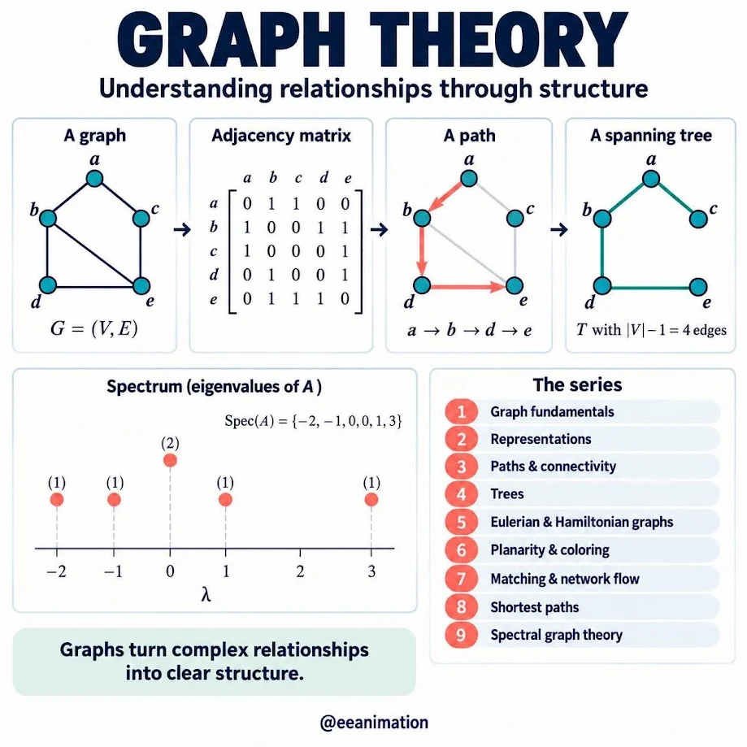

1
1단계 · 인접 행렬의 스펙트럼 — 고윳값으로 보는 숫자 지문
방법: 고윳값을 줄기 그림으로일상: 사람마다 다른 지문
박사상황 질문 — 그래프 두 개가 그림으로는 달라 보이는데 사실 같은 모양일 수 있어요. 숫자 몇 개로 그래프를 요약해 비교할 수 있을까요?
왜 이 방법을 쓰나
- 문제 상황: 그래프의 모양을 숫자 몇 개로 요약하고 싶어요.
- 앞 방법의 한계: 차수 목록(1장)만으로는 모양이 다른 그래프를 구별하지 못할 때가 많아요.
- 해법: 인접 행렬의 고윳값 n개(스펙트럼)를 구해요. 합은 0, 제곱의 합은 2 × 선 수, 가장 큰 값은 평균 차수와 최대 차수 사이라는 성질로 숫자를 읽고 검사해요.
쉽게 말하면 — 스펙트럼 = 그래프의 숫자 지문.
수학 수식을 어려워하는 조수가 대신 물어봅니다

조수 하루 (수강생)고윳값을 다 더하면 왜 꼭 0이에요?
학교 수학으로 보면: 고등학교 「행렬」에서, 고윳값의 합은 대각선 숫자의 합(대각합)과 같다는 성질이 있어요. 인접 행렬의 대각선은 모두 0이라 합도 0이에요.
| 식 조각 | 읽는 법 | 뜻 |
|---|
| λ | 람다 | 고윳값 하나 |
| Σ λ = 0 | 고윳값의 합 | 대각선이 모두 0이라서 |
| Σ λ² = 2|E| | 고윳값 제곱의 합 | 선 수의 두 배 (1의 개수와 같음) |
| λ_max | 가장 큰 고윳값 | 평균 차수 이상, 최대 차수 이하 |
숫자로 한 번 해 보기삼각형: 숫자 줄 (1, 1, 1) → 이웃 모으기 → (2, 2, 2) = 2배 → λ = 2. 나머지 둘은 −1, −1
검사: 2 + (−1) + (−1) = 0 ✓, 4 + 1 + 1 = 6 = 2 × 선 3개 ✓
원자료 다섯 점: 계산하면 {−2, −1.17, 0, 0.69, 2.48} → 합 0 ✓, 제곱 합 ≈ 12 = 2 × 6 ✓

조수 하루 (수강생)원자료 표지의 {−2, −1, 0, 0, 1, 3}은 합이 1이고 개수가 6개라 검사에서 바로 걸리네요!
데이터·코드 첫걸음 — 고윳값은 한 줄 코드로 구해요
고윳값 계산은 손으로 하기 어렵지만, 컴퓨터는 행렬 표를 넣으면 바로 숫자 줄을 돌려줘요. 사람이 할 일은 결과가 그럴듯한지 확인하는 거예요.
확인 두 줄: ① 다 더하면 0인가 ② 제곱해 더하면 「행렬의 1 개수」와 같은가.
넣는 것: 인접 행렬(2장의 0/1 표)
받는 것: 고윳값 n개 (점이 5개면 5개)
확인: 개수 = 점 수, 합 = 0, 제곱 합 = 1의 개수
이 세 가지 확인만으로도 원자료의 숫자가 틀렸다는 것을 알아낼 수 있어요.
일상으로 치면사람마다 지문이 다르듯, 그래프마다 고윳값 모음(스펙트럼)이 달라요. 다만 지문과 달리, 스펙트럼이 같은데 모양이 다른 그래프도 있어요. 예를 들어 별(가운데 점에 넷이 붙음)과 「네모 + 떨어진 점 하나」는 둘 다 {−2, 0, 0, 0, 2}예요.
그래프 이론에서는스펙트럼은 인접 행렬 A의 고윳값 λ들의 모음이에요. 점이 n개면 고윳값도 n개(겹치면 겹친 만큼)이고, 합은 0, 제곱의 합은 2|E|예요. 값이 0을 기준으로 좌우 대칭이면 이분 그래프예요(일자 4점, 네모, 별). 원자료 표지 그래프의 스펙트럼은 {−2, −1.17, 0, 0.69, 2.48}이에요.

박사그래프를 바꿔 가며 빨간 줄기(고윳값)를 보세요. 원자료 다섯 점에서는 회색 빈 원(원자료 값)과도 비교해 보세요.

주판봇원자료에 3이 있었으니 가장 큰 값은 3 맞죠? 최대 차수도 3이고요!

초파리 연구원최대 차수는 「위쪽 한계」일 뿐이야. 계산 결과를 봐. 그리고 원자료는 숫자가 6개야.
스펙트럼 실험 — 그래프를 바꾸며 고윳값 줄기 그림 보기
풀이 — 한 걸음씩
- 삼각형 {2, −1, −1}, 4점 모두 연결 {3, −1, −1, −1}: 가장 큰 값 = 모든 점의 차수(같은 차수 그래프).
- 일자 4점·네모·별은 값이 0을 기준으로 좌우 대칭 → 두 편으로 나눠 칠할 수 있는 이분 그래프예요(6장 2색).
- 원자료 다섯 점: 계산한 값 5개(빨강)의 합은 0, 원자료 값 6개(회색)의 합은 1이에요.
- 가장 큰 값 2.48은 평균 차수 2.4 이상, 최대 차수 3 이하예요.
이 단계의 한계 — 스펙트럼이 같아도 모양이 다른 그래프가 있어요(별과 「네모 + 점 하나」, 그리고 점이 많은 트리에서는 오히려 흔해요). 그래서 스펙트럼은 「다르면 확실히 다른 모양」이라는 검사에는 강하지만, 「같으면 같은 모양」이라고 단정할 수는 없어요.
박사의 해석 — 고윳값은 컴퓨터가 늘 내주지만, 그 숫자가 맞는지는 「합 0, 제곱 합 2|E|」로 1분 안에 확인할 수 있어요. 원자료든 AI든 숫자를 받으면 이 두 가지부터 보세요.
원자료 인포그래픽 보기 (영어 그림)
원자료 표지 「Spectrum (eigenvalues of A)」 — Spec(A) = {−2, −1, 0, 0, 1, 3}과 줄기 그림.
원자료 표지의 Spec(A) = {−2, −1, 0, 0, 1, 3}은 점 5개 그래프인데 값이 6개이고 합이 1이라 맞을 수 없어요. 원자료의 {−2, −1, 0, 0, 1, 3}을 이 페이지에서는 계산한 값 {−2, −1.17, 0, 0.69, 2.48}로 바꿉니다(특성다항식 λ(λ + 2)(λ³ − 2λ² − 2λ + 2) = 0의 근).

파이썬 코드로 보면 (몰라도 됩니다)
위 실험을 컴퓨터로 할 때 쓰는 코드 몇 줄이에요. 한 줄마다 뜻을 붙였어요. 읽지 않아도 본문을 따라오는 데 문제없어요.
직접 해 보려면 — 설치 없이 브라우저에서 파이썬을 돌리는 구글 Colab(colab.research.google.com)에서 새 노트를 열고, 맨 위에 import networkx as nx를 먼저 적은 뒤 아래 줄을 차례로 실행하세요. 결과가 페이지의 숫자와 같은지 비교하는 것이 가장 좋은 연습이에요.
import numpy as np- 숫자 표 계산 도구(넘파이)를 불러와요
A = nx.to_numpy_array(G)- 그래프를 인접 행렬로 바꿔요
lam = np.linalg.eigvalsh(A)- 대칭 행렬의 고윳값을 작은 것부터 구해요
lam.sum(), (lam**2).sum()- 확인: 합은 0, 제곱 합은 2 × 선 수